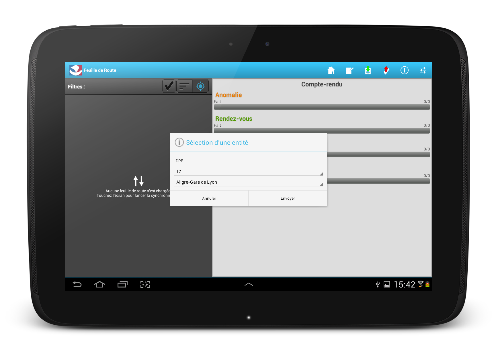
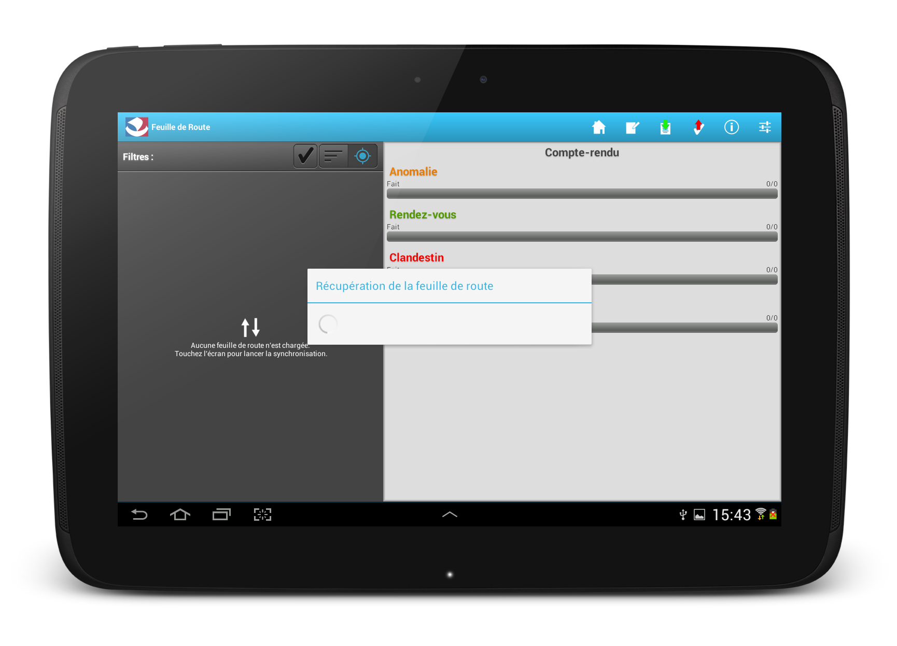
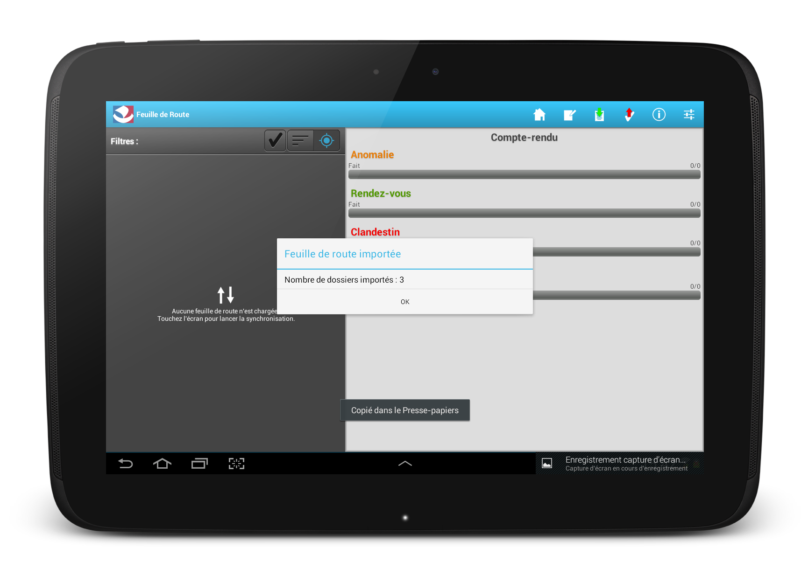
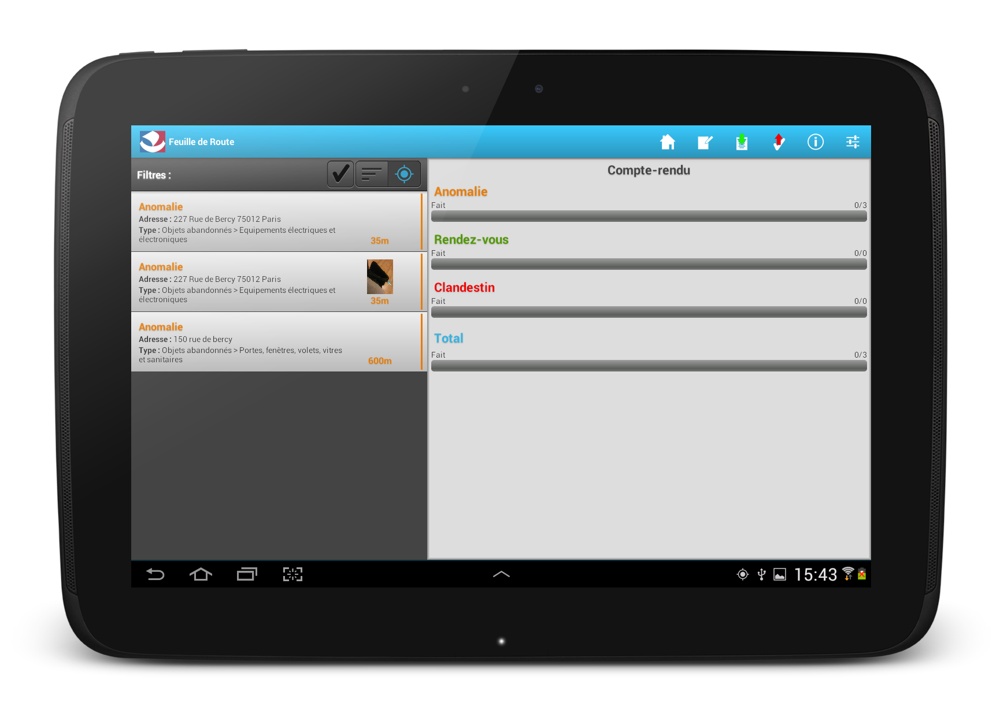
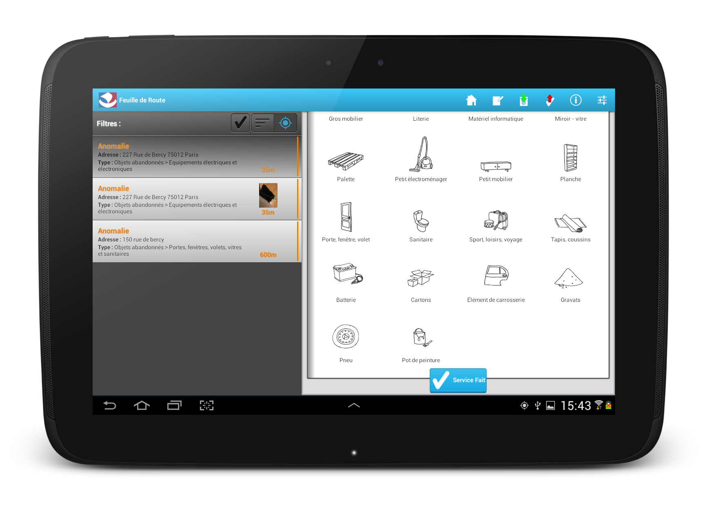

Application "feuille de route" sur tablette Android
L'application "feuille de route" permet aux agents de la DPE de les assister durant leur collecte d'objets encombrants. L'application fournit une liste agrégée contenant :
- les anomalies venant de DansMaRue.
- les rendez-vous pris par les usagers pour le ramassage de leur encombrant (RAMEN V2).
Premier écran après le lancement. La feuille de route est vide

Après avoir cliqué sur le bouton avec la flêche verte, l'agent choisi l'entité géographique sur laquelle il souhaite travailler.
L'agent télécharge sa feuille de route contenant les anomalies de DansMaRue et les rendez-vous de RAMENV2
 Sa feuille de route apparait alors. Plusieurs vues sont possibles : par proximité géographique ou par liste dont les éléments sont classés par nom de rue par ordre alphabétique.
Le détail d'une anomalie permet à l'agent de saisir ce qu'il constate ramasser sur le lieu.
L'écran de validation permet d'enregistrer un "service fait".
L'anomalie ainsi traitée disparait de la liste du travail restant à effectuer. L'icone avec une flêche rouge permet de remonter tous les services fait dans l'outil de la Mairie.